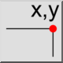

Θέση
Γραμμή εργαλείων / Εικονίδιο:


Μενού: Πληροφορίες > Θέση
Συντόμευση: I, O
Εντολές: infopos | io
Πρόκειται για αυτόματη μετάφραση.
Γραμμή εργαλείων / Εικονίδιο:


Αυτό το εργαλείο εξάγει τις απόλυτες, καρτεσιανές συντεταγμένες επιλεγμένων σημείων στο σχέδιο.